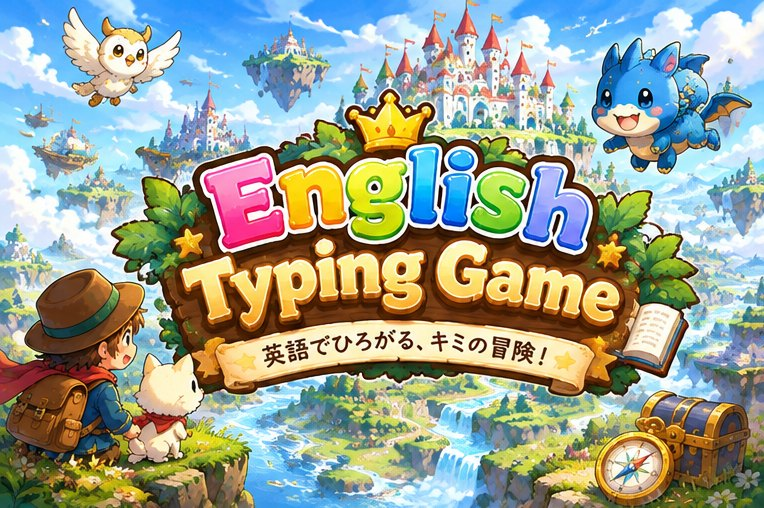

英文の橋に、あながあいているよ。ことばを タイプして 板をはめて、わたろう！
小学校の英語から、中学1年くらいまで。英文の下にある日本語をヒントに、あなの ことばを 考えます。 まちがえても 板が おちるだけ。何回でも やりなおせます。 パソコンでは ほんもののキーボードで打てます。スマホでは画面の「もじふだ」か「キーボード」を おしてください。 きろくは この端末のブラウザの中だけに のこります。英文の よみあげは、端末に入っている声だけを つかいます。